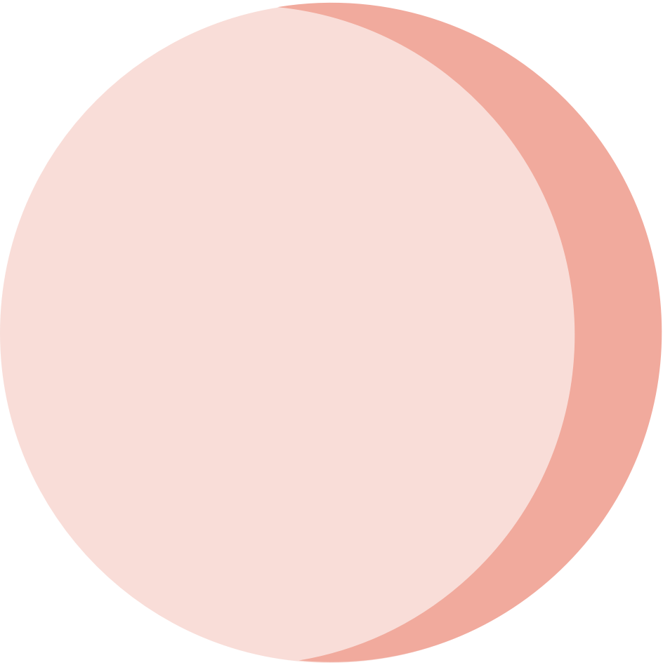
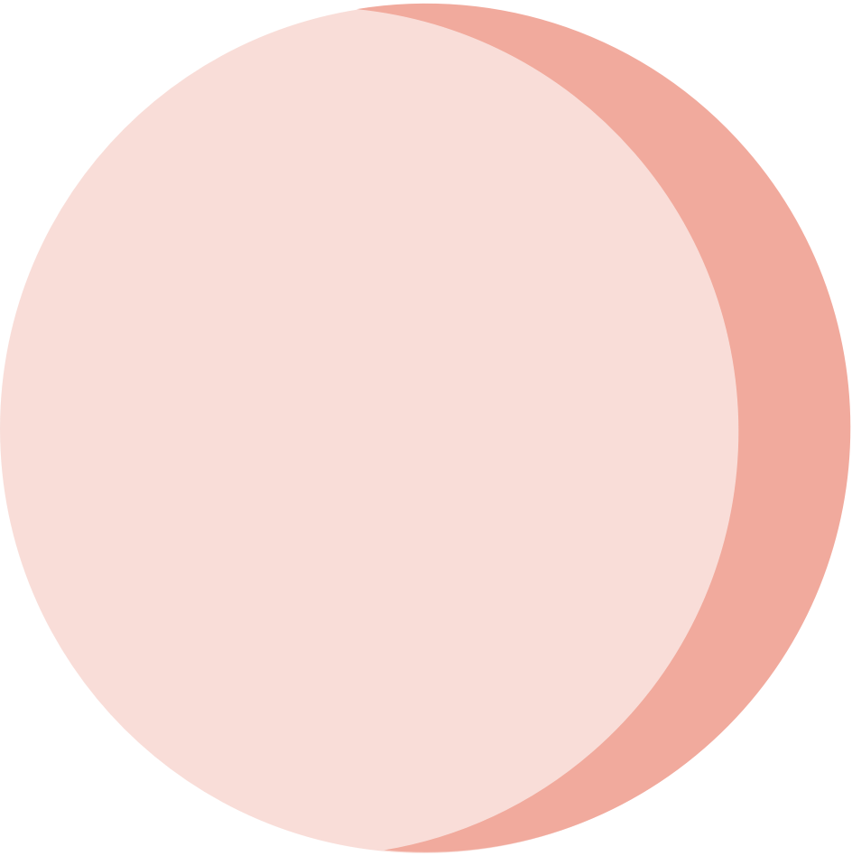

VXU
about me
Missing Forwarder
The Missing Forwarder infographic is a graphic design piece about the
deployment and automation process of a machine learning platform.

01. The goal
My goal was to design an infographic that would increase the awareness of the machine learning
platform’s use cases and its process to clients and internal teams.
02. Who was it for?
Clients and internal deployment teams who need to understand the deployment
process of Accenture’s Automatic Ticket Resolver (ATR) platform. ATR is a machine
learning platform that automatically solves issues that are given to a customer
service desk. This infographic was used to increase the awareness of its various
use cases.
03. The problem
1. Lack of creative and visual content as the original diagrams of the process were not created by a designer
2. Information was overloaded and did not engage the user
04. The solution
Ideation and illustration
As I consolidated information about the step by step process of ATR’s use cases, a few things
stood out to me that allowed me to create a rough sketch. I wanted to:
- Emphasise the programs, frameworks and languages used physically throughout the process
- Showcase more vital steps through the use of separate platforms and contrasting colours
- Create simple labels so the user could easily follow the flowchart
 

Adobe Illustrator
I wanted the design to be something new and refreshing. So I decided to create an isometric model
that demonstrated the different components of the automation process. Here, I made a
refined sketch using Adobe Illustrator.

A closer look at the outcome
Internal teams were extremely excited to see the new flowcharts and the infographic was issued to
clients alongside an information pack demonstrating the benefits of using ATR.


05. Reflections and takeaways
This was a big challenge for me as it was my first time creating an isometric model and I decided
to purely use manual guidelines that I created in Adobe Illustrator. Instead, I realised that I should
have used the 3D function within Adobe which allows me to change the angle of any shape as it would
have been less time consuming. Other than that, I’m happy that I could put so much detail into the
design as well as inside jokes that I put in for my team.
Next: ChipHound
Previous: Control Room